来源：https://he1l3flk3v.feishu.cn/docx/M0Bldi0Y1oVXSRxxPJ1c3H6YnYf
我在刚加入生财的时候，算是低谷期。原来的业务是做医美医生孵化，通过前端打造 IP 形象获取流量，后端联合私人医院成交，我们这个公司年营收 3000 万。
但是 23 年 4 月，抖音所有医生账号失去和和粉丝进行私聊功能，直接在源头卡死了我们的引流渠道。我结束了这个项目，大概经历半年的新项目探索区，最终确定出海作为 all in 10 年的赛道。
给大家做个自我介绍：我叫Liza，我在去年成功孵化几个 tiktok 账号，并成功变现。
其中的战绩 A 账号，1 个月 4000 粉的时候，拿下 300 万订单。
B 账号，比较猛的时候 1 天 1 万粉增长。7 天涨到 7 万粉，接到 3000 万订单。
我将在这篇文章中分享一些关键的经验和要点。如果你是外贸工厂从业者外贸工厂需要短视频低成本引流，如果你是独立站、亚马逊卖家想外低成本获取流量。如果你是国内电商从业者，想要抖音、淘宝国货品牌出海增强品牌传播力。如果你是工厂型商家内贸增长乏力，OEM利润低，转型电商上岸这篇文章或许能为你提供一些解决思路和启发。
选择 Tiktok 契机
去国外旅游的时候，无聊有天晚上下载 tiktok，发现里面的内容给我的感觉是几年前的抖音。然后数据调查了一下。
TikTok 全球月活跃用户数：达到 15.8 亿左右。美国的用户数量为 1.205 亿。市场空间足够。既然我们之前能在抖音拿到结果，在 tiktok 拿到结果应该也不难。说干就干，开始在海外做 tiktok。遇到非常多障碍，如果不是一开始下决心 all in。国内业务要是有可以做的空间。是很难做海外的。因为海外遇到的难点太多了。
因为手里有些工厂资源和一些经验。我有男装 T 卫衣，童装，加热衣服服装工厂资源，电子类产品工厂资源。于是就按照自己拥有的供应链方向进行了海外 IP 孵化。目标用户很明确就是国外采购商。
走的策略很简单，前端 tiktok 塑造 IP，把人引流到私域，在私域里通过销售把人聊成交。
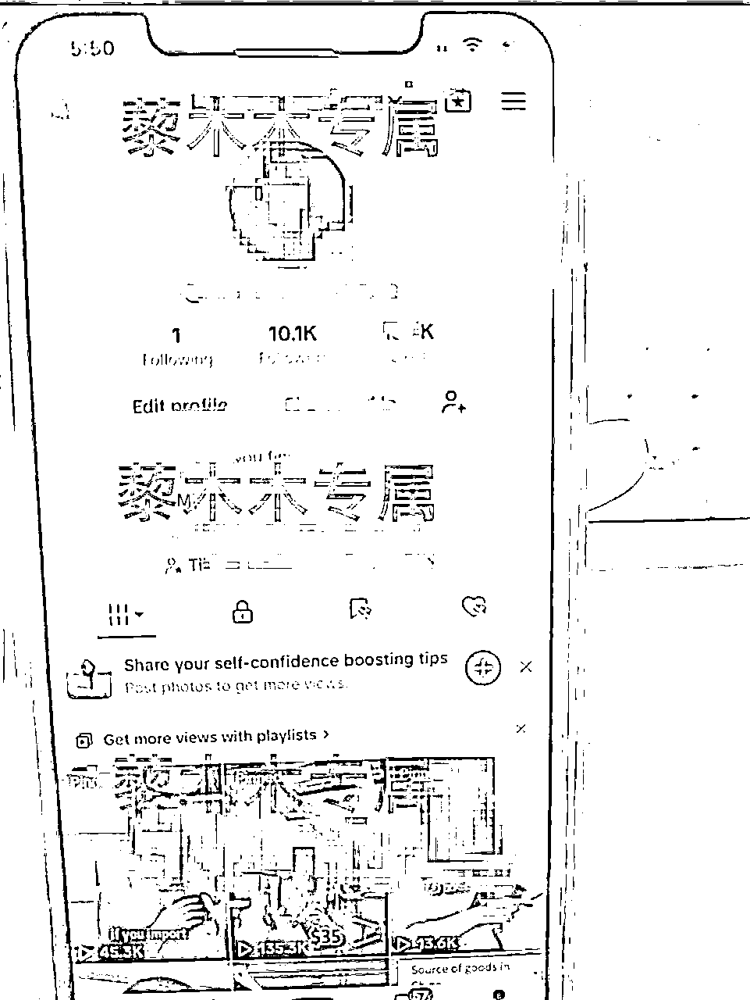
跟之前做医生 IP 套路一样。因为有经验，所以 0-1 跑通的过程比较顺畅。
其实所有的高客单价高利润的产品也都可以采用：打造前端 IP私域引流 的模式进行。
利润足够高，就有成本支撑你花时间塑造 IP，以及后端花时间去一对一服务客户。
如果是做薄利多销的产品。还是走电商模式比较好，能够迅速起量，对销售要求不高，引入客服就好。产品不同策略也不一样。
非常幸运，TK 账号沉下心做了 1 个月，就涨了 4000 个粉丝，也很快拿到 300 万的订单
快速的拿到正反馈，证明我当时做的时候，市场存在一定空白期。有助于快速入行。
总结了一下，拿下订单的核心在于 2 个关键因素：
下面我依次讲下这两个关键因素。
要打造用户有信任感的IP，你可以从 3 类选题入手：
爆款选题（50%的内容）
产品选题（25%的内容）
人设选题（25%的内容）
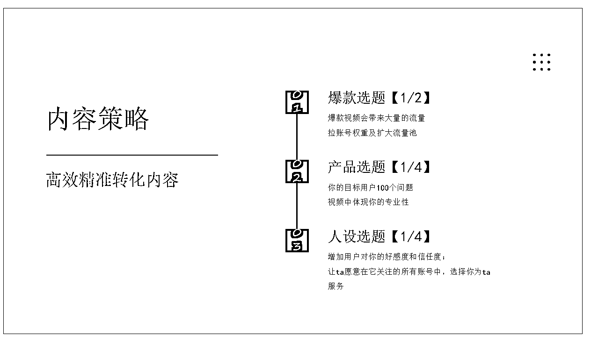
爆款选题的作用是帮助你拉高权重，以及带来流量。只有流量足够大，才能帮助你筛选出你真正的目标用户。
比如下面这个案例，“AI” 是热点词汇，“假如我是黑心商家”是热门选题模板。用这些热门元素拍出来的视频，就容易爆。
爆了之后系统会给你带上更精准的内容标签，之后的视频播放量也会上一个层级，不会再是几百个小眼睛。
那么如何找到爆款选题呢？我分享几个我常用的方法：
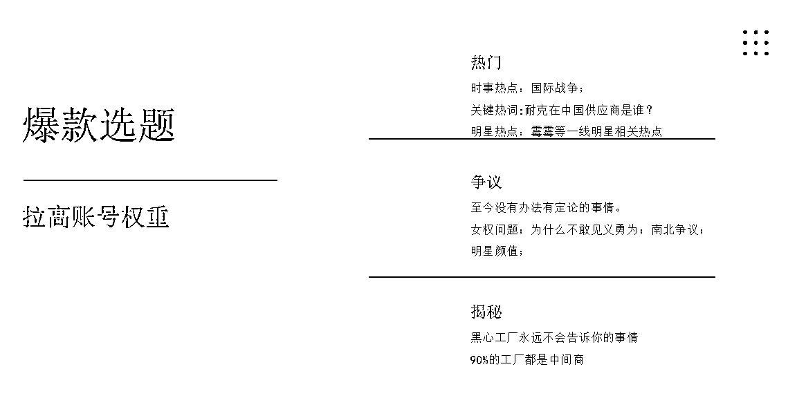
爆款选题一般分为3种类型。
第一种是热门选题，俗称蹭热点。常见的热点是时事热点，比如局部战争，美国选举等。
第二种爆款类型是比较有争议性的话题。就是至今都没有办法有定论的话题。比如男女对立。比如宗教信仰，比如种族问题。比如明星颜值。例如：某个明星颜值分数。
第三种类型选题是揭秘性话题。不管是谁都会对内幕有好奇心。一个行业的内幕往往会引起大多数人的好奇。比如我是黑心工厂，我绝对不会告诉你的事情。90%的工厂基本都是中间商。
爆款选题能帮我们吸引大量流量，但这些观众不一定都是精准用户。所以咱们要适时穿插一些产品相关的内容，这样就能留下真正感兴趣的人。
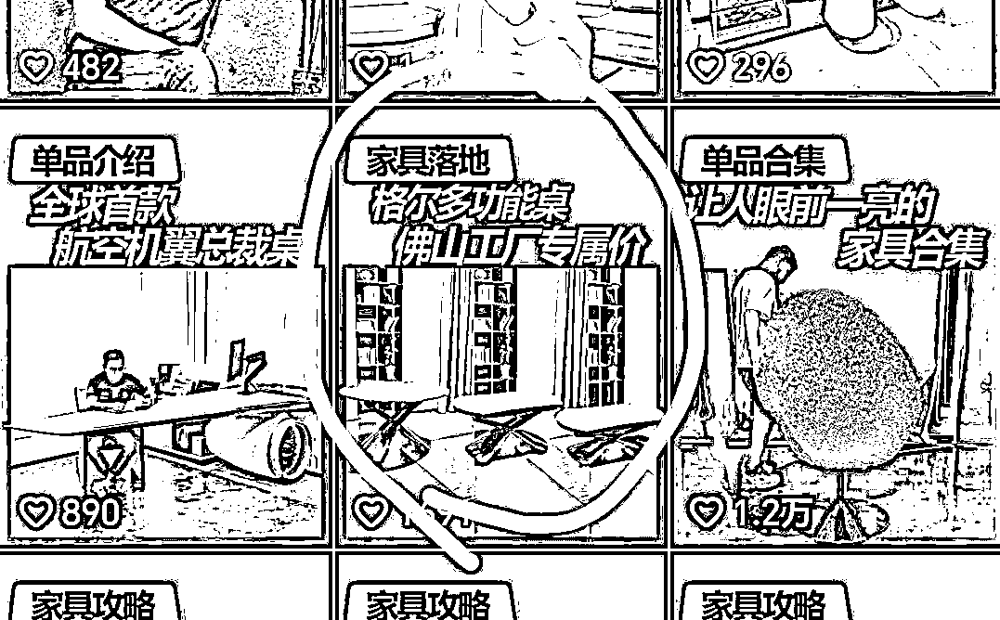
比如上面这条“格尔多功能桌”，就是典型的产品选题。通过真实案例，能体现你的差异性，从而占领粉丝心智。
如何找到产品选题呢？我也给大家3个思路：
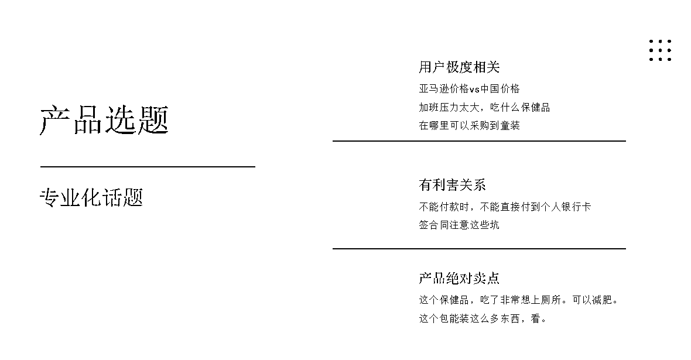
第一种是跟目标用户极度相关的。比如我们目标用户是B端供应商。那么跟他有关的产品选题就是：如果采购童装，你需要去的三个城市。类似这种，你的目标用户会问的100个问题。你如何进行解答。
第二种是有厉害关系的类型选题。你要放大他们恐惧。比如如果不清楚这三条。那么你在中国进货你会亏掉100万。诸如此类的如果不那么做会有什么损失的。
第三种是绝对拥有绝对卖点。比如同样是保健品。你的这个产品就是比较容易上厕所。比如同样是家具，你就能拿到佛山工厂价格
有了产品选题还不够，我们还需要准备一些人设选题。这类选题的作用是展现真实的你，只有真实才能获得喜欢。不然互联网上，这么多流量很大的网红，干货也很多，为什么选择你？
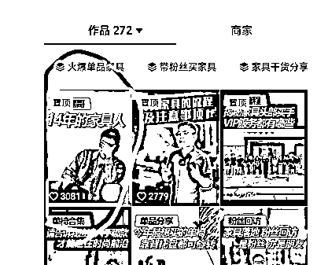
上面这两种就是很典型人设视频，说明你在这个行业呆了很多年，有助于打造你在这个领域专业性。
同样的，对于如何制作人设选题，我也有几个思路分享给你：
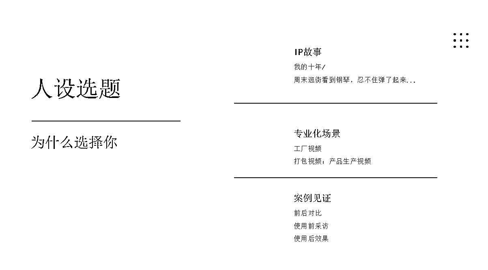
第一种是关于你的IP故事。比如之前很火的我的十年。比如这个家具垂类的IP故事：14年家具人。10年家具老炮
第二种需要体现你的专业性。做工厂就在工厂拍摄。做医生就拍看诊和手术室。
第三种是需要真实案例拍摄。做手术，就拍手术前后对比。做家具就拍中山粉丝落地案例。拍你真实服务客户过程。
前端 IP 塑造的越成功，后期拿下客户的可能性越高。基本你看那些变现高的 IP 基本遵循这一套内容塑造手法。
此外，关于打造 IP 的周期和流程，我也想分享一些经验。
打造 IP 的周期 & 流程是什么？
打造出一个成熟的 IP 需要花多少成本？
什么样的人适合做？
签单要解决的是信任问题，用户信任来自于两个方面：
如果想要做大宗贸易，需要解决的问题是价格和专业度。
你遇到的客户是在这个行业很专业的客户，这个产品价格他大概心里有数，换句话说，对方已经问了起码 4-5 家供应商。
这个时候，你能打动他的一定是他最需要的，以我们这个 300 万订单大客户为例子。
我们在跟这个客户交流中发现这个客户对价格特别敏感。为什么他这么敏感，因为他也是贸易商。所以他在每件成本上省下的钱，都会转化成的他实实在在的利润。
基于他的诉求，我们给的耳机的价格是市场上最低价。低到什么地步，大多数工厂不愿意做。能接这个单子是手上积压 180 万耳机的库存货，为了出库存，工厂愿意不赚钱生产剩下的 170 万耳机。
基于我们拥有市场上所没有的价格优势，最终拿下了这个客户。
确定客户签单后，催促客户打定金，约定交货周期，确定好货运。一个半月后，客户在墨西哥收到了耳机成品，我们也完成了这个订单。
所以如何拿下客户，最核心是你需要在对话中摸清楚客户最核心的需求，如果客户对价格敏感，就满足价格需求。
弄清楚核心需求，是满足成交的关键。
以下是他们常见的几个顾虑点：
一是产品质量
产品要符合行业标准和客户预期，如采购服装，面料质量、做工精细程度等都很关键。
二是价格合理
价格需要在客户的预算范围内，并且客户会期望该价格在市场上有竞争力，能够让他们在销售或者使用产品过程中有一定的成本优势。
三是按时交货
在合同约定的时间内收到货物很重要，这样客户可以安排后续的销售、生产计划等，比如对于节日商品，错过销售旺季会造成损失。
四是包装合适
包装应能保护产品在运输过程中不受损坏，同时包装的外观、标识等也要符合要求，像易碎品需要有良好的缓冲包装。
五是良好的沟通
客户希望能够及时、准确地了解订单进展情况、产品细节等信息，在遇到问题时也能迅速和供应商沟通解决。
如果客户有足够意向，则需要 2 天内完成逼单。
在了解了获得用户信任的关键策略后，我想分享一些在实际操作中可能遇到的挑战和坑，以帮助大家提前规避风险。
1.源头工厂不是很好找，大多数我们能遇到的货一般都是经过二手，三手，四手
哪怕是工厂，其实也是组装厂，价格不一定是最优。打交道的时候，不一定要极致的低价。但是必须是靠谱，质量要稳定。靠谱的意思是交货周期靠谱，说多少天就多少天。
很多工厂就是不催不做的。如果条件允许可以雇佣一个跟单员，专门跟工厂，这样能保证质量和交货周期。我遇到有些工厂，真的是不催不给你做，特别没有时间观念。
2.不要线下交易
有个客户的货非常特殊，我常合作的工厂没有这部分货。网上寻找的供应商说他有这批货。于是我非常迅速的付钱。事实证明这个人就是一个骗子。他根本没有这批货，他只想骗你 70%定金。最终这个哥发了货不对板的烂货过来。
为了信誉，我把这笔款全部赔给客户。做生意的时候，注意筛选有些人是不打算做长久生意的。而且你由于异地原因，还不好报警。算是自己的一个教训吧。
所以给大家最重要一个忠告是走担保交易支付。收到货后打款。很多供应商是不愿意走担保交易支付。不要因为自己是新人要迁就所谓行业规矩。硬气一点，跟所有供应商第一次交易都走担保交易。
虽然在行业中存在一些挑战，但出海市场依然充满了机遇。基于我的经验，我总结了目前出海可以抓住的几个机会，供大家参考。
1. BtoB 制造业出海
适合有源头工厂或者独特供应链优势的人。BtoB 制造业出海优势我就不直接说了，其实比较适合有独特资源的人。
只要你的货质量好，价格好。国内商家也可以供应。无非是到海外能赚的差价更多。赚的是信息差的钱。
也可以直接供给海外开店的用户。
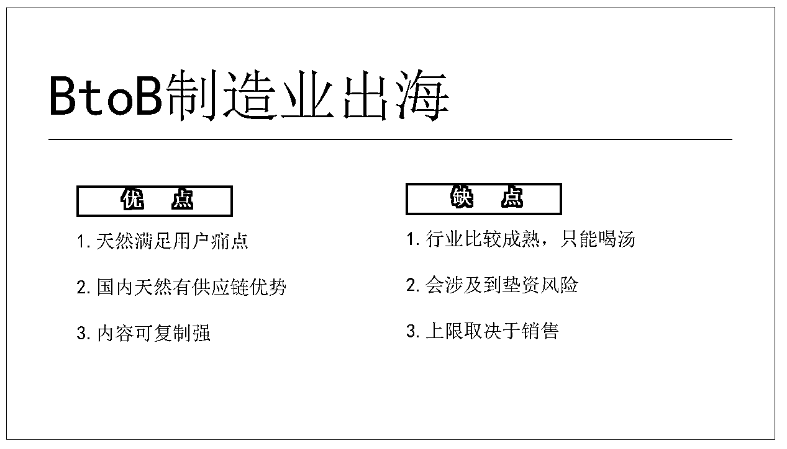
2.电商出海
出海四小龙（temu、shein、tiktok 和速卖通）为代表的跨境电商平台发展迅猛，不断开拓新的市场和业务领域。你跟着平台走，跟着平台开店。现在的时期就像 16 年淘宝一样。商家少。
其实也是普通人能接触到的一夜暴富的机会了。只要中了一个爆款，就会源源不断有钱拿。
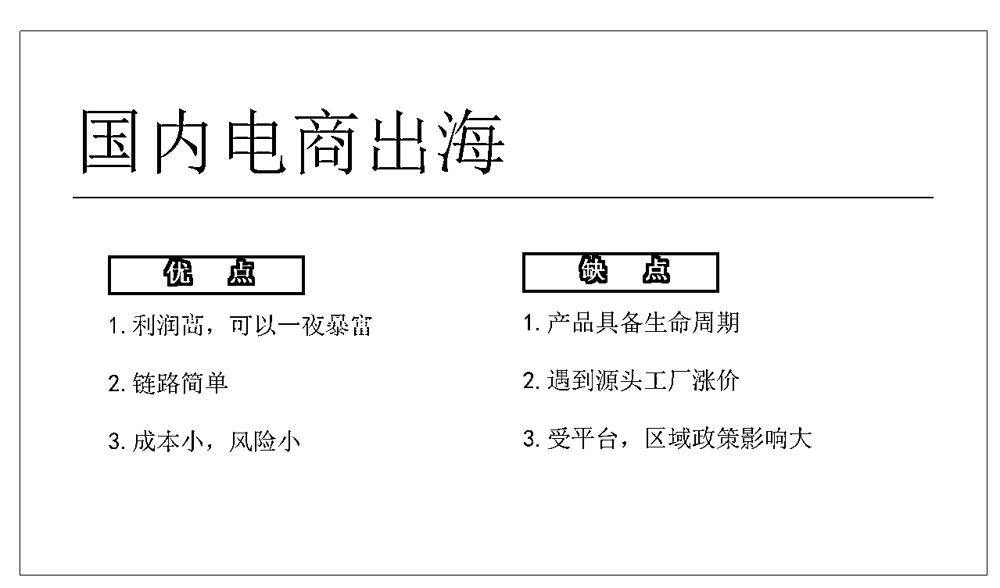
3.自有品牌出海
国内品牌出海。中国出海的品牌不是很多。基本都是供应链出海。其实中国发展到今天已经到了可以品牌出海的阶段了。
比较适合国内已经做成年营收 1 亿以上的国产品牌。戴森，哇哈哈，椰树等优秀品牌可以蓄力出海。
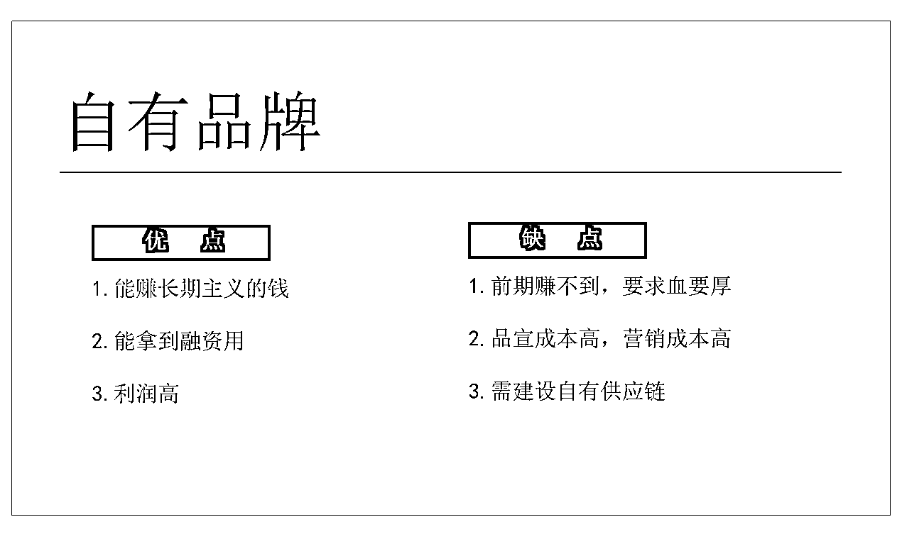
4.出海服务商
所有需要出海的生意都需要出海服务商的辅助。
比如物流，国外品牌注册。国外小店开店，国外仓储。tiktok 运营。海外做生意，信息差和麻烦程度太高了。所以对服务商的需求其实是存在的。
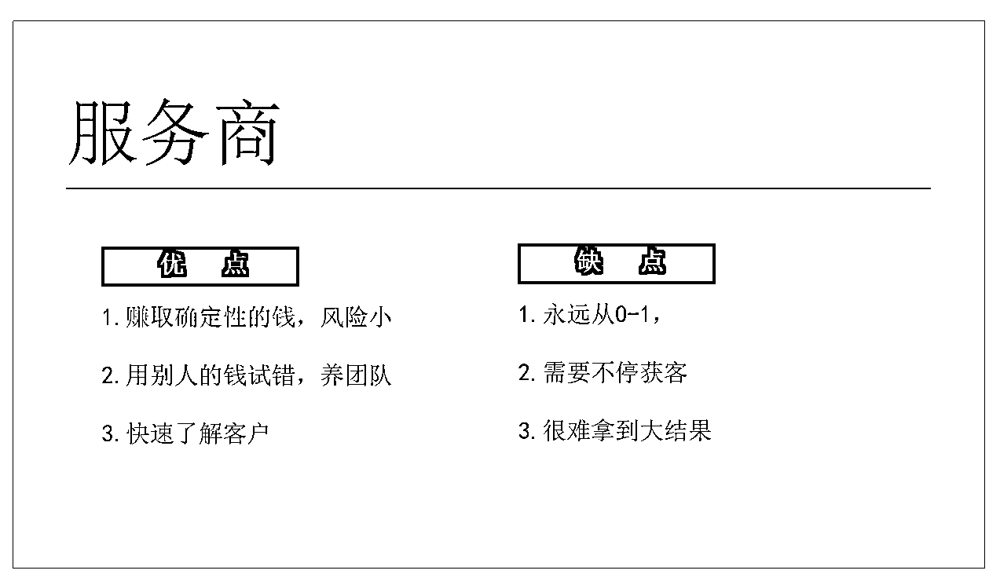
我希望我的这些经验和资源能够对大家有所帮助。
欢迎自己有工厂想从内贸转外贸的老板找我交流
欢迎想要做流量或者会做流量的朋友找我，
想出海，但是同时需要资金的朋友，我这边可以帮忙对接投资机构
需要海外 kol 投流的朋友，可联系我
目前拥有的靠谱的供应链工厂资源有男装 T 和卫衣，童装，加热衣服，2 家电子类产品合作工厂。
总之所有出海相关业务，踩过的坑，都可以进行交流~